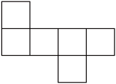
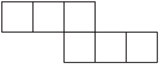
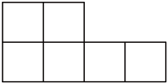
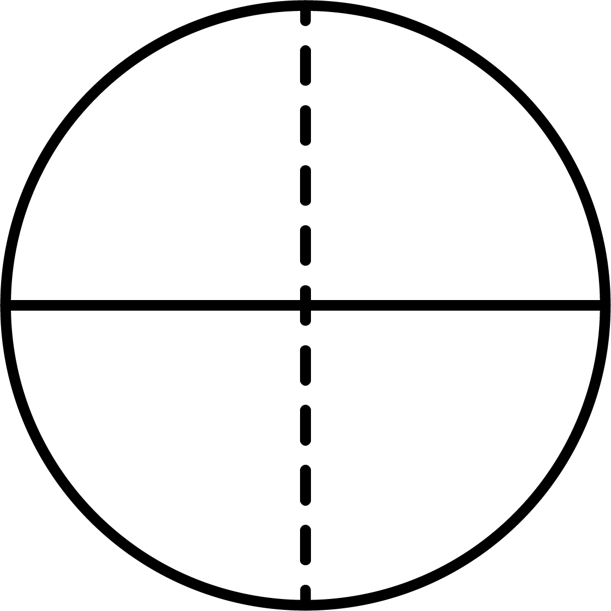
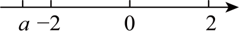
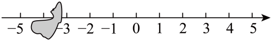
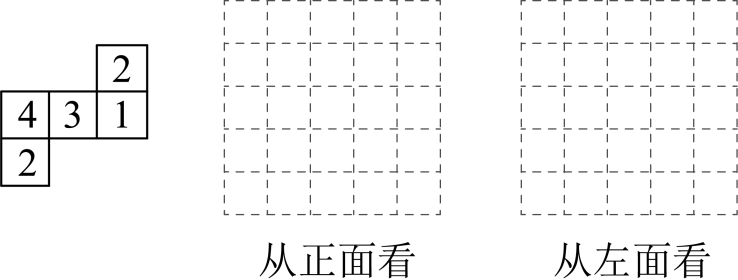
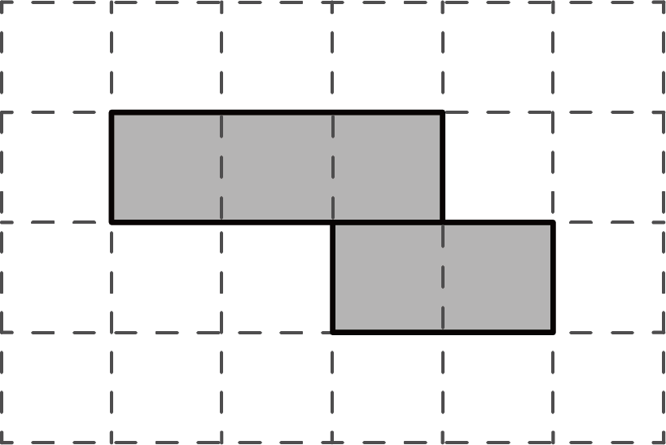
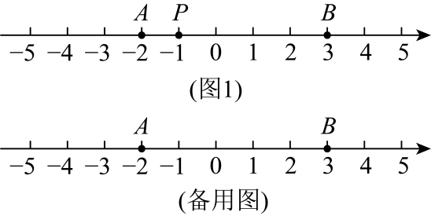

七年级数学上学期第一次月考·培优卷
【北师大版2024】
考试时间：120分钟 满分：120分 测试范围：丰富的图形世界~有理数及其运算
姓名：___________班级：___________考号：___________
考卷信息：
本卷试题共24题，单选10题，填空6题，解答8题，满分120分，限时120分钟，本卷题型针对性较高，覆盖面广，选题有深度，可衡量学生掌握本章内容的具体情况！
第Ⅰ卷
一．选择题（共10小题，满分30分，每小题3分）
1．（3分）在−2，+3.5，0，−23，−0.7，11中．负数有（ ）
A．1个 B．2个 C．3个 D．4个
2．（3分）（24-25七年级上·陕西咸阳·期末）将如图所示的直角三角形绕一条直角边所在直线l旋转一周，得到的立体图形是（ ）
A．圆柱 B．三棱柱 C．圆锥 D．球
3．（3分）下列说法中正确的是（ ）
A．两个有理数的和一定大于每个加数 B．绝对值最小的数是0
C．整数只包括正整数和负整数 D．−1是最大的负有理数
4．（3分）（24-25七年级上·全国·期末）下列图形中，不是正方体的表面展开图的是（ ）
A．

B． C．
C．
D．
5．（3分）（25-26七年级上·江苏连云港·开学考试）我国一元硬币厚度是1.85毫米，重6.1克．照这样计算，1亿枚硬币共重（ ）吨．
A．6.1 B．61 C．610 D．6100
6．（3分）（2025·吉林松原·模拟预测）如图，一个圆柱体切去一部分，则从上面看到的图形是（ ）
A． B．
B． C．
C．

D．
7．（3分）（24-25七年级上·贵州遵义·期末）有理数a在数轴上的位置如图所示，下列各数中，可能在1到2之间的是（ ）

A．−a B．|a| C．|a|−1 D．1−|a|
8．（3分）（24-25七年级下·安徽宿州·阶段练习）计算−0.752025×432024的结果为（ ）
A．−0.75 B．0.75 C．43 D．−43
9．（3分）（24-25七年级上·河北邢台·期末）如图，数轴上的某数，被墨水遮盖，则该数的相反数可能是（ ）

A．3.3 B．3.9 C．−3.3 D．−3.9
10．（3分）（24-25八年级上·贵州遵义·期末）定义一种对正整数n的“F”运算，①当n为奇数时，结果为3n+5；②当n为偶数时，结果为k2n（其中k是使k2n为奇数的正整数），并且运算重复进行，例如，取n=26，如图所示；若n=449，则第“F④”的运算的结果是（ ）

A．1 B．3 C．7 D．8
二．填空题（共6小题，满分18分，每小题3分）
11．（3分）若x−2+y+3=0，则yx的值为 ．
12．（3分）已知点A在数轴上表示的数是−2，将点A先向左平移3个单位长度，再向右平移6个单位长度得到点B，则点B表示的数是 ．
13．（3分）（24-25六年级上·山东威海·期中）用一个平面分别截四个几何体：球、圆柱、圆锥、三棱柱，可以得到三角形截面的几何体有 ．
14．（3分）在数轴上点A表示的数是−2，点B也在数轴上，且点A、B之间的距离是4，则点B表示的数是 ．
15．（3分）（24-25七年级上·江苏宿迁·期末）一个正方体的相对的表面上所标的数的和都相等，如图是这个正方体的表面展开图，那么x+y的值是 ．

16．（3分）（24-25七年级上·广东韶关·期中）如图，第十四届国际数学教育大会（ICME－14）会徽的主题图案有着丰富的数学元素，展现了我国古代数学的文化魅力，其右下方的“卦”是用我国古代的计数符号写出的八进制数3745．八进制是以8作为进位基数的数字系统，有0~7共8个基本数字．八进制数3745换算成十进制数是3×83＋7×82＋4×81＋5×80＝2021，则八进制数2025换算成十进制数是 ．（注：80=1）

第Ⅱ卷
三．解答题（共8小题，满分72分）
17．（6分）（24-25七年级上·贵州贵阳·阶段练习）计算：
(1)−32−18+10；
(2)−12025⋅322÷−34×23．
18．（6分）（24-25七年级上·广东韶关·期中）把下列各数填在相应的横线上：
① −28，② 135，③5.21，④0，⑤2050，⑥ −38，⑦ −0.1427，⑧ 95%，⑨ −3.14，⑩ +12．
（1）非负整数：{__________________________________…}．
（2）负分数：{__________________________________…}．
（3）正有理数：{__________________________…}；
（4）负有理数：{__________________________…}；
19．（8分）（24-25七年级上·山东青岛·期末）如图，在平整的地面上，10个完全相同的棱长为8cm的小正方体堆成一个几何体．

(1)在下面的网格中画出从左面看和从上面看的形状图．
(2)求这个几何体的表面积．
20．（8分）某检修小组开汽车从A地出发，在东西向的马路上检修电路，如果规定向东行驶为正，向西行驶为负，一天中七次行驶记录如下：−4，+7，−9，+8，+6，−7，−2．（单位：km）
(1)求收工时距A地多远？
(2)若每千米耗油0.5升，出发时油箱加满且容量为20升，求途中至少还需补充多少升油？
21．（10分）（24-25七年级上·湖南衡阳·期中）有理数a、b、c在数轴上的位置如图：

(1) 判断正负， 用“>”或“<”填空：b−c 0，−a+b 0， ac 0．
(2)化简：b−c−3−a+b．
22．（10分）（1）用若干个棱长为1的小立方块搭一个几何体，从上面看到这个几何体的形状如图所示．请画出从正面看和从左面看到的这个几何体的形状图．

（2）请你在下图中增加一个小正方形，使所得图形经过折叠后能成为一个正方体．（画出一种即可）

23．（12分）（24-25七年级上·河北廊坊·阶段练习）某校篮球队选拔队员，按规定男队员的标准身高为180cm，高于标准身高的部分记为正，低于标准身高的部分记为负．现有8名候选队员，身高记录如下表所示．
选手人数（人） | 1 | 2 | 3 | 2 |
与标准身高相比（cm） | −2 | +4 | −6 | −3 |
(1)选拔队员时，身高在180～185cm范围内为合格，则有______名候选队员合格；
(2)若将标准放宽为175～185cm，则有______名候选队员合格；
(3)求这8名候选队员的平均身高．
24．（12分）如图，数轴上点A表示的数是−2，点B表示的数是3，阅读以下材料并解决相关问题．若在数轴上存在一点P，使得点P到点A的距离与点P到点B的距离之和等于n，则称点P为点A、B的“n格距点”．例如：在图1中，点P表示的数是−1，点P到点A的距离与点P到点B的距离之和为1+4=5，则称点P为点A、B的“5格距点”．

(1)若点P表示的数是2，则n的值为______；
(2)数轴上表示整数的点称为整点，若整点P为点A、B的“5格距点”，则这样的整点P有______个；
(3)若点P为数轴上一点，且点P到点B的距离为1，求点P表示的数及n的值；
(4)若点P在数轴上运动，满足点P到点B的距离等于点P到点A的距离的2倍，且此时点P为点A、B的“n格距点”，求点P表示的数及n的值．